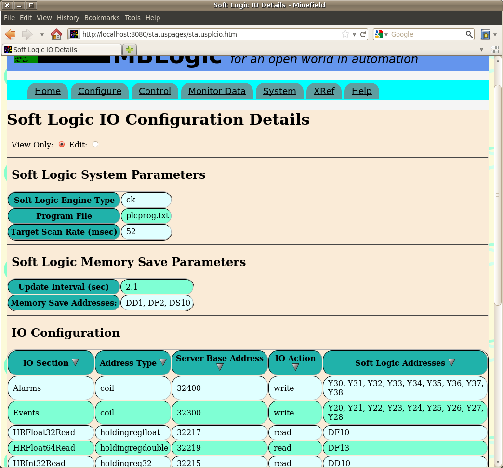
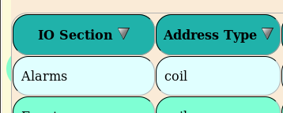
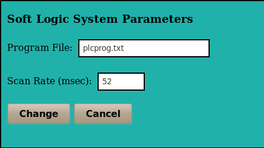
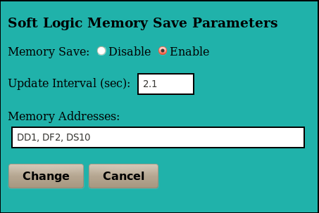
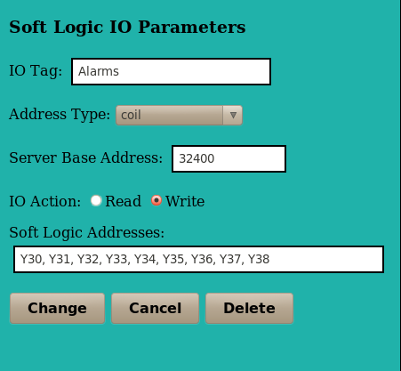

MBLogic
for an open world in automation
MBLogic
for an open world in automation
Help - Configure Soft Logic IO
Overview
The "Configure Soft Logic IO" page provides an overview the current configuration of the soft logic IO subsystem. The soft logic IO sub-system is responsible for transfering data between the soft logic sub-system and the system data table. This is divided into the following sections:
- System parameters
- Soft logic memory save parameters.
- Soft logic IO address configuration.

Soft Logic Parameters
Soft Logic System Parameters
| Item | Configuration Label | Description |
|---|---|---|
| Soft Logic Engine Type | type | This is the type of soft logic engine enabled for this application. |
| Program File | plcprog | This is the file containing the soft logic program. |
| Target Scan Rate (msec) | scan | This is the target (not actual) delay between scans for the soft logic program. |
Soft Logic Memory Save Parameters
| Item | Configuration Label | Description |
|---|---|---|
| Update Interval (sec) | updateinterval | This is the minimum interval (in seconds) between saving memory addresses. |
| Memory Save Addresses | wordaddr | These are the memory addresses which will be saved. |
IO Configuration
| Item | Configuration Label | Description |
|---|---|---|
| IO Section | [userdefinedname] | This is the IO section with a user defined name. |
| Address Type | addrtype | This is the system (server) data table address type. |
| Server Base Address | base | This is the starting address in the system data table used a source or destination for data.1 |
| IO Action | action | This determines the direction in which data is copied. |
| Soft Logic Addresses | logictable | This is the list of individual soft logic addresses used as the source or destination for data. |
1For string data, the maximum string length is also included and is displayed in brackets. E.g. 2345 (15)
Display Order
The table of data displayed can be sorted by clicking on a table heading. The table will be sorted according to the selected column.

Edit Parameters
System Parameters
Scan rate is in milli-seconds.

Memory Parameters
Memory address must be separated by commas.

Logic IO Parameters
Soft logic addresses must be separated by commas.
